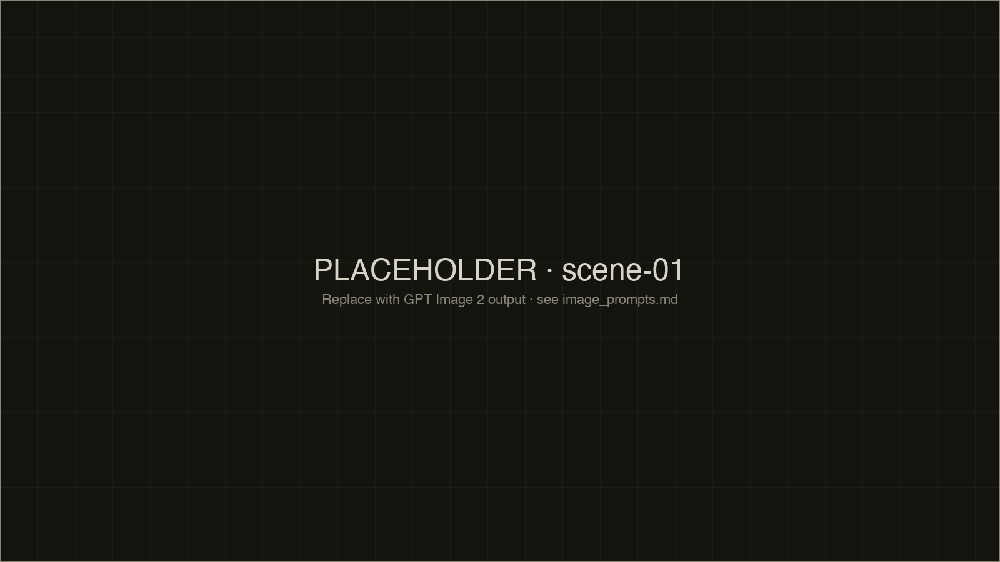
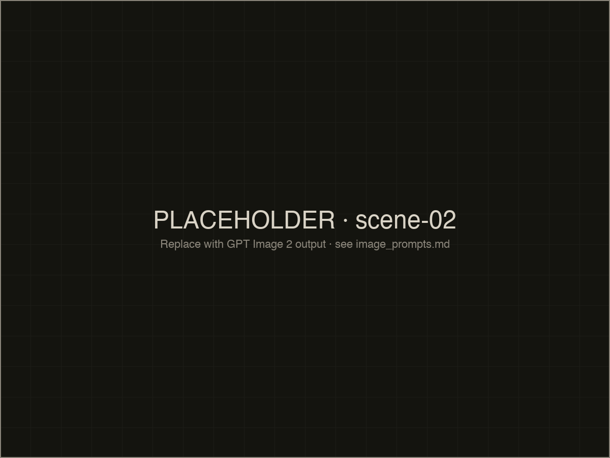

سقط البرميل على بيتها.
سقط معه السقف، الجدار، صوت أمها.
بقيت هي بين الحجارة، عينٌ مفتوحةٌ على سماءٍ لم تَعُد بيتها، وشريطُ شعرٍ ورديٌّ لم يعرف أن العالم سقط.

اثنتا عشرةَ سنة، والغبار لم يهدأ بعد.
الغبارُ لا يهدأ، يستقرّ في الذاكرة، ويُعاد رشُّه كلما حاولنا النسيان.
لم تكن هدفاً عسكرياً
كانت طفلةً تنام، أو تأكل، أو ترسم على الجدار بقلم رصاص.
اختار النظام أن يُسقط عليها برميلاً من حديدٍ ومتفجراتٍ وكراهيةٍ مُعَلَّبة، ثم سمّى ذلك دفاعاً عن الوطن.

الذاكرة محكمة مفتوحة
مَن قَتَل لم يَمُت بعد.
مَن أَمَر لم يُحاكَم بعد.
الذاكرة هي المحكمة الوحيدة المفتوحة.
نحن لا نوثّق لنبكي.
نوثّق لئلا تنسى الأجيال أن البراميل لم تسقط من السماء، سقطت من قرار.